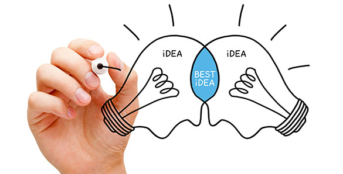

Continua Solutions LLC


Continua Solutions
Continua is an oil and gas consultancy offering QHSE support to oil and gas clients in the US. With a focus upon networking, collaboration and continual learning Continua aims to bring innovative, yet simple, solutions to clients. With the option of working with other independent QHSE professionals Continua can draw upon a wide range of resources to meet project objectives.
QHSE Management Systems
- Audit and review
- Implementation and improvement planning
- ISO Pursuit: Quality, Safety and Environment
- Compliance checks
- Vendor assessments
Environmental Support
- Environmental data reporting
- Liaison between client and regulator
- Air, waste and water strategy development
- Day-to-day support to asset teams (inc. offshore production)
- Environmental advisor to engineers (inc. FEED)
Principal ConsultantLynne Ramsey, BA (Hons), MSc


Lynne Ramsey is a QHSE professional with over 10 years of oil and gas experience. Originally from an environmental background supporting North Sea assets in the UK (typically through full-time secondments to major operators) Lynne has now been based in Texas for the last four years. She works with a client base which includes operators, the supply chain, onshore pipelines and petrochemical industry. Lynne specializes in ‘simplifying things’ and helping to increase the efficiency of her clients QHSE processes whether through management system review and improvement projects, day-to-day support to operating assets or as part of the design team for major projects.
Equally as happy in the office, onsite or offshore Lynne holds valid HUET, TWIC and HASC Basic Training certifications allowing her to travel to a broad range of client locations within the Gulf Sector.
A regular attendee at events such as Pumps & Pipes, SPE and IMarEST Lynne is a firm believer in cross-discipline / inter-industry learning and is continually seeking new ways to consider safety within all forums.
Recommendations
Project: Chevron Rosebank FEED (FPSO and subsea tie-back deep-water development, West of Shetland, UK)
“It was a pleasure working with Lynne on the Chevron Rosebank Project. Lynne combines a well structured approach to work with an organised mind and highly creative problem solving skills which were well suited to a fast paced FEED project. Lynne is approachable and friendly, knowledgeable of safety and environmental regulations and best practices in industry, diligent and determined when it comes to preparing deliverables, giving presentations or sharing information, and generally brightens the office environment and is a pleasure to work with. I would welcome the opportunity to work with her again. ”
ROSS CORMACK
GENESIS/TECHNIP, HOUSTON ENVIRONMENT DISCIPLINE LEAD, (FORMERLY ENVIRONMENTAL ENGINEER AT WORLEYPARSONS)
Project: Premier Oates Drilling Program
“ Lynne works well within teams and with clients. We have used her and her team a number of times for environmental auditing and surveying and her findings have helped improve our own environmental performance in drilling. ”
CHRIS BROCK
WELLS ENGINEERING EHS ADVISOR AT TULLOW OIL (FORMERLY PREMIER OIL HSE ADVISOR)
Project: Chevron Rosebank FEED (FPSO and subsea tie-back deep-water development, West of Shetland, UK)
“ I had the pleasure of working with Lynne Ramsey on the Chevron Rosebank Project from 2012 until 2014. During this period Lynne was responsible for, amongst other duties, collating the technical data for the Project Environmental Statement. This required extensive input from various company groups in order to satisfy UK legislation, international regulations and industry standards. This challenging and complex effort helped lead to the successful submittal and approval by UK government, enabling Chevron's strategic development to proceed. In addition to her wide environmental experience Lynne proved also to be a great team member, equally admired by coworkers and clients for her thorough, methodical and consistent approach to work tasks, as well as her collaborative, supporting and pleasant character. I highly recommend Lynne to any project and company as a world-class professional and a great colleague, looking forward to future opportunities of working with her again. ”
BOJAN PAUNAVIC
OFFSHORE INSTALLATION METHODS SPECIALIST (FORMERLY CHEVRON ROSEBANK FEED PROJECT INSTALLATION ENGINEER)